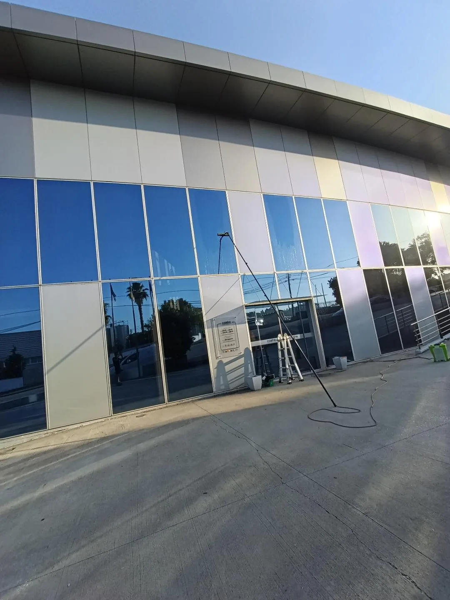
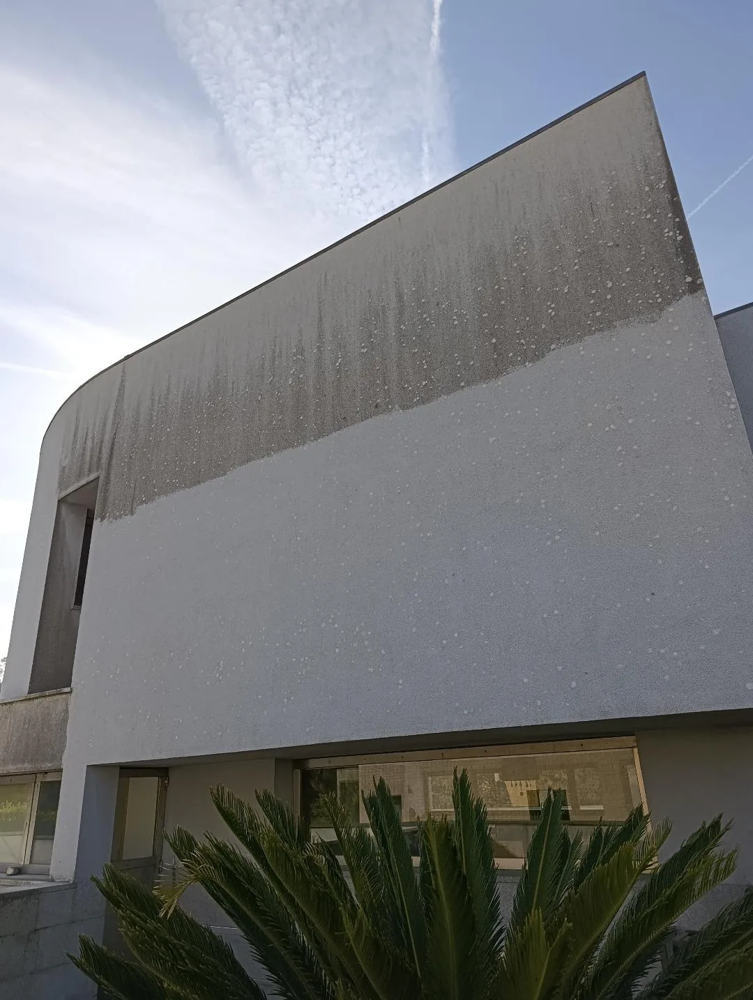
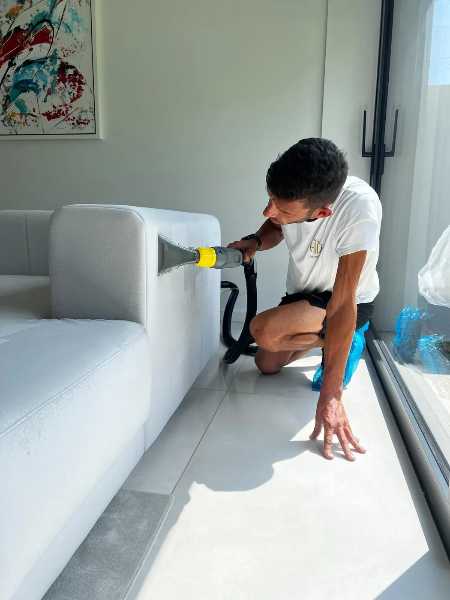

Limpeza de vidros
Janelas, montras, claraboias e superfícies envidraçadas sem marcas nem riscos.

HV Limpezas
Interior e exterior, com equipamento profissional e inovador.
O que fazemos
Interior e exterior, com o equipamento certo para cada superfície e sempre com acabamento profissional.
Janelas, montras, claraboias e superfícies envidraçadas sem marcas nem riscos.
Fachadas de vidro e edifícios com sistema de osmose e água purificada — sem andaimes.
Limpeza especializada que remove poeira e resíduos e devolve o rendimento aos painéis.
Remoção de bolores, algas e sujidade de fachadas, capoto, telhados e muros — pressão ajustada a cada superfície.
Fachadas ETICS tratadas com softwash de baixa pressão, sem danificar o revestimento.
Tratamento hidrofugante que protege fachadas e superfícies após a limpeza, prolongando o resultado.
Lavagem por injeção-extração de sofás e estofos, que remove ácaros, odores e nódoas.
Higienização profunda de colchões, com secagem rápida e resultado saudável.
Lavagem e higienização de tapetes e carpetes, devolvendo a cor e a maciez.
Limpeza lâmina a lâmina de estores e persianas exteriores e interiores.
Remoção de pó, tinta e resíduos após construção ou remodelação — pronto a habitar.
Desengorduramento e recuperação de pavimentos, terraços e áreas exteriores.

Antes e depois
O softwash remove anos de bolor, algas e sujidade acumulada em fachadas, capoto e telhados — com baixa pressão, sem agredir os materiais.

Sobre a HV Limpezas
Somos uma equipa dedicada à limpeza técnica de vidros, fachadas e superfícies difíceis. Trabalhamos com equipamento profissional e inovador para chegar onde a limpeza comum não chega — com segurança e acabamento impecável.
Trabalhos realizados
Alguns dos trabalhos de limpeza de vidros, fachadas, estofos e mais. Clique para ampliar.
O que dizem de nós
Clientes empresariais e particulares que confiam na HV Limpezas.
Profissionalismo, dedicação, empenho e muita seriedade são alguns dos adjetivos que encontro para classificar a empresa H.V Limpezas, à qual vinculei os serviços para a minha empresa. Parceria que pretendo manter pela excelência dos serviços prestados. Super recomendo!!
Excelente profissional, pontual e perfeccionista. A Brave Defender está muito feliz com o seu trabalho, parabéns!!!!
Profissionalismo e excelência no serviço! Encontrámos profissionais de palavra e que acrescentam muito ao nosso negócio! Parabéns.
Excelente serviço e profissionalismo. Parabéns, 5*.
Recomendo 100%!! Trabalho muito bom mesmo.
Serviço perfeito.. recomendo vivamente 👌
Serviço 5 estrelas. Recomendo.
Fale connosco
Diga-nos o que precisa de limpar. Respondemos com um orçamento claro e sem compromisso.
O mapa é fornecido pelo Google Maps e só é carregado com o seu consentimento, para respeitar a sua privacidade.